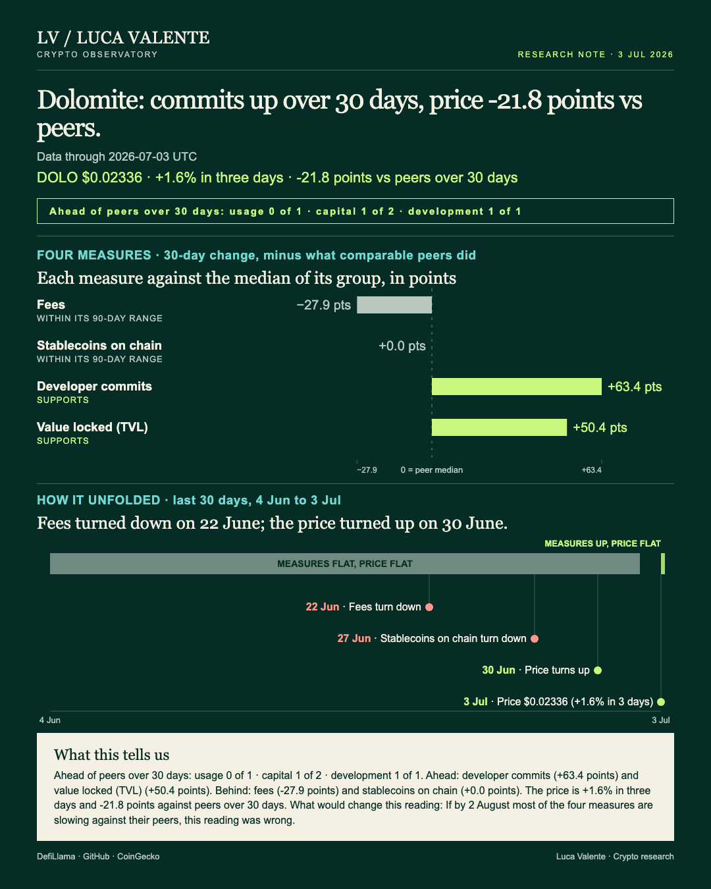
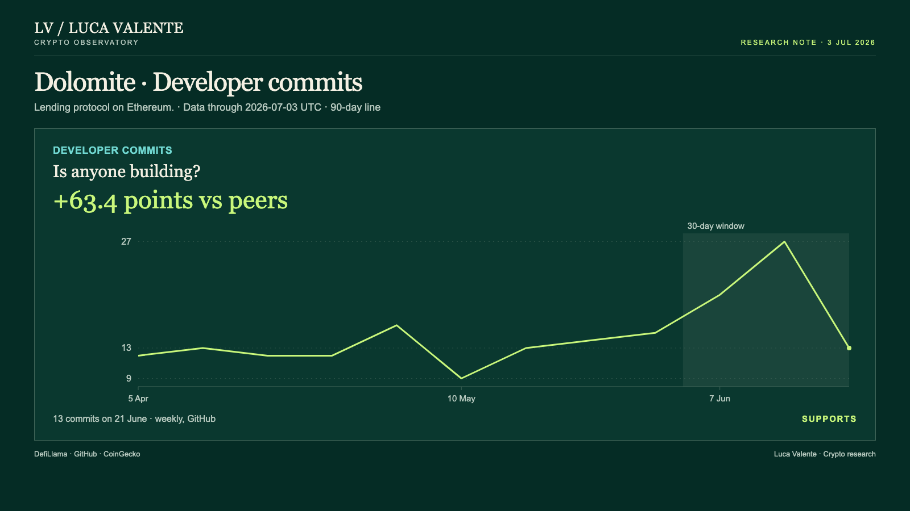
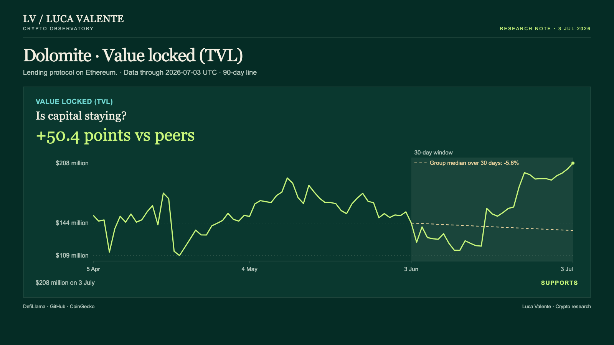

Training note, written on 24 September 2026 from data as of 3 July 2026. Not part of the published series.
Development Moved First At Dolomite, The Price Came Last

On 3 July, Dolomite's token price had only just turned up, weeks after the code work on the protocol began to pick up. For anyone holding DOLO, this means the token and the protocol behind it have not been moving on the same calendar. Dolomite is a lending protocol on Ethereum, and the distance between those two starting points is what this reading is about.
Dolomite sits in a Lending group of 35 protocols, and not every one of them reports every line. Each number below is checked against the peers that do, Dolomite among them. Why does the timing matter? Its development line turned up first, in the week starting 3 May, 61 days before this reading; commits have risen in six of the eight weeks since, and are up 44.2% over the last 30 days on their own. Value locked and the price both turned up together, on 30 June, three days before the data date. Fees turned down on 22 June, eleven days before 3 July, and have fallen on eight of the twelve days since, a 30-day drop of 40.2%. Stablecoins on the chain have fallen for seven days straight, since turning down on 27 June, six days before; over that same 30-day window they're down 4.0%. Development moved first; the price moved last.
Usage, capital and development are three separate lines here, and I'm keeping them that way. Usage means fees, what users pay to use Dolomite. Capital means value locked and stablecoins on the chain. Development means the code commits in Dolomite's public repositories. None of the three stands in for the others.
Users paid Dolomite $31,456 in fees on 3 July, up 1.3% from $31,050 the day before. Over the past 30 days fees are down 40.2%, from $52,592 on 3 June. The median of the 27 Lending entities that report fees, Dolomite included, fell 12.2% over the same month, so Dolomite's fee line is 27.9 points behind its group. In the past 90 days, fees ranged between $29,904 and $147,022; the latest reading sits inside that range. I try to weigh that drop against the gains elsewhere, and it doesn't resolve cleanly. Fees are the line users pay for directly, and it's the one moving against the rest of the story. I don't have a clean way to call that noise.
Dolomite's public repositories logged 13 code updates in the week ending 27 June, its development activity counted weekly, down from 27 the week before. Over 30 days, commits are up 44.2%. The median of the 25 Lending entities that report them, Dolomite included, is down 19.2%: a gap of 63.4 points in Dolomite's favor. Across the last 12 weeks, commits ranged between 9 and 27; the current 13 sits inside that range too.

What's locked up inside Dolomite's contracts, in dollar terms, reached $208 million on 3 July, up 3.1% from $202 million the day before. Over 30 days it's up 44.9%, from $144 million on 3 June. The median of the 29 Lending entities that report value locked, Dolomite included, fell 5.6% over the same month: a gap of 50.4 points. That $208 million reading is in dollars, and dollar totals move when the price of what's inside them moves, not only when new money arrives. ETH fell 8.6% over the same 30 days, from $1,858 to $1,699, and the numbers here cannot split the 44.9% between price and new deposits. Across the past 90 days, value locked ranged from $109 million to $208 million; nothing in that window has topped the latest reading.

One more thing worth saying before the stablecoin number: it belongs to Ethereum, a network Dolomite runs on, not to Dolomite itself. That total came to $154.07 billion on 3 July. It fell 0.5% from $154.85 billion the day before, and 4.0% over 30 days. The median of the 28 Lending entities that report this line, Dolomite included, also fell 4.0%: an exact match, not an edge in either direction. Over the past 90 days the figure ranged from $154.07 billion to $168.70 billion; the latest reading is the lowest point in that range.
DOLO, Dolomite's own token, closed at $0.02336 on 3 July, flat on the day and up 1.6% over three days, from $0.023 on 30 June. Over 30 days it's down 14.0%, from $0.02717 on 3 June, 21.8 points behind the median of the 10 priced Lending tokens, which rose 7.8% in the same window. Across the past 90 days the price has moved between $0.02206, on 11 June, and $0.03835, on 13 May.
There's no news or announcement behind any of this in what I have: this note only knows that a line turned, not why. It has no user count or wallet count either; fees, developer commits, stablecoins on the chain and value locked are the four things it can see. And everything above stops on 3 July. What happened after that isn't something this reading knows.
The date I am holding myself to is 2 August, and I will report back either way. If by 2 August most of the four measures are slowing against their peers, this reading was wrong. The argument needs capital and development rising while the price stays flat; if most of the four measures lose ground on their peers by then, the head start this note describes is gone.
Price turned up on 30 June, the same day as value locked. That gives the token's turn three days of history, against 61 for the commits, and three days cannot tell a turn from a pause.
Sources: DefiLlama (fees, stablecoins on chain, value locked), GitHub (developer commits), CoinGecko (price).
Peer group: 34 lending protocols tracked by DefiLlama (who they are). 'Net of the group' is the 30-day change minus the group's median.
Not financial advice. This is a research note based on public on-chain data.